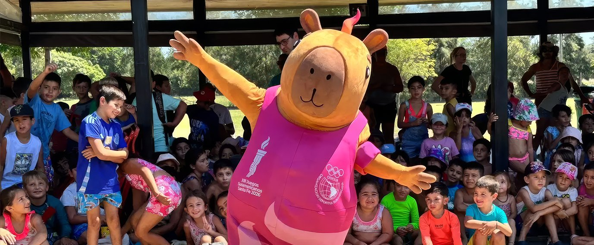
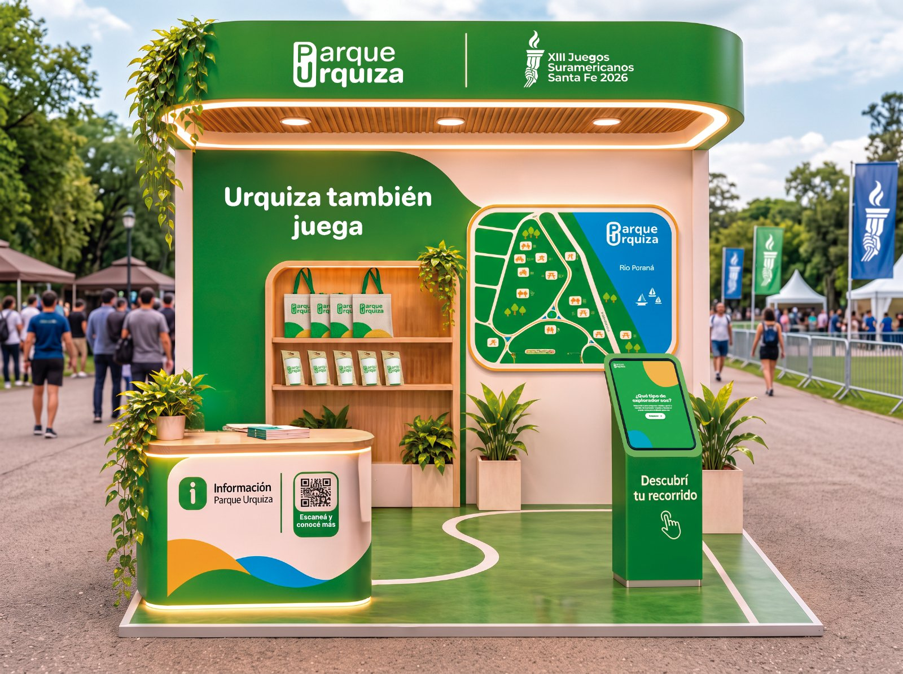
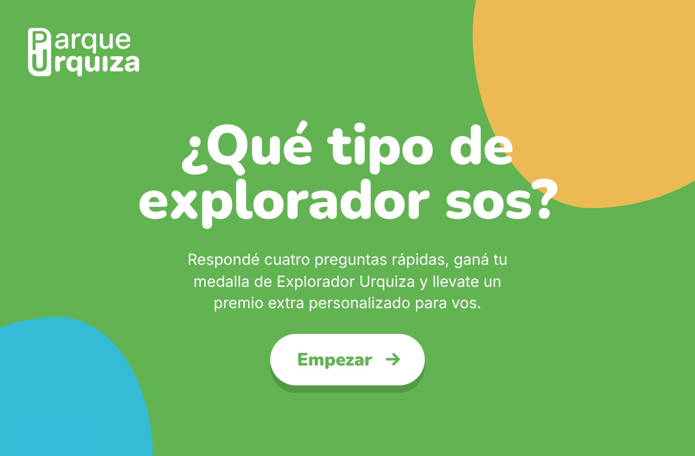
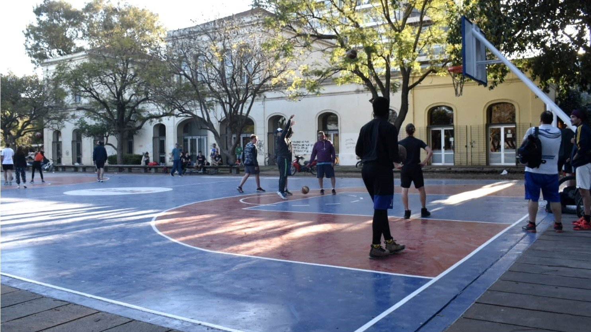

Del 12 al 26 de septiembre, el Parque Urquiza llega al Fan Fest de los Juegos Suramericanos. Vení a jugar, ganá tu medalla de Explorador Urquiza y llevate el parque en el bolsillo.
Fecha · Date
12 al 26 de septiembre
Dónde · Where
Fan Fest · Parque de la Independencia
Horario · Hours
08:00 - 18:00
Entrada · Entry
Libre y gratuita

En 9 m² te llevamos de paseo por el Parque Urquiza: jugás, descubrís sus rincones y te vas con todo listo para visitarlo.
Superá tres desafíos rápidos sobre el parque. Al terminar ganás tu medalla digital de Explorador Urquiza, tu recorrido recomendado y un QR para hacerlo.

En el parque se tira al aro, se juega a las bochas y se corre mirando el río. Por eso, en los Suramericanos, Parque Urquiza no podía faltar.
